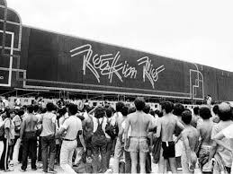

História do festival
O Rock in Rio nasceu em 1985, no Rio de Janeiro, e marcou a história da música ao reunir grandes artistas nacionais e internacionais. Desde então, o festival cresceu e se tornou um dos maiores eventos de música do mundo, conquistando milhões de fãs ao longo de suas edições.
